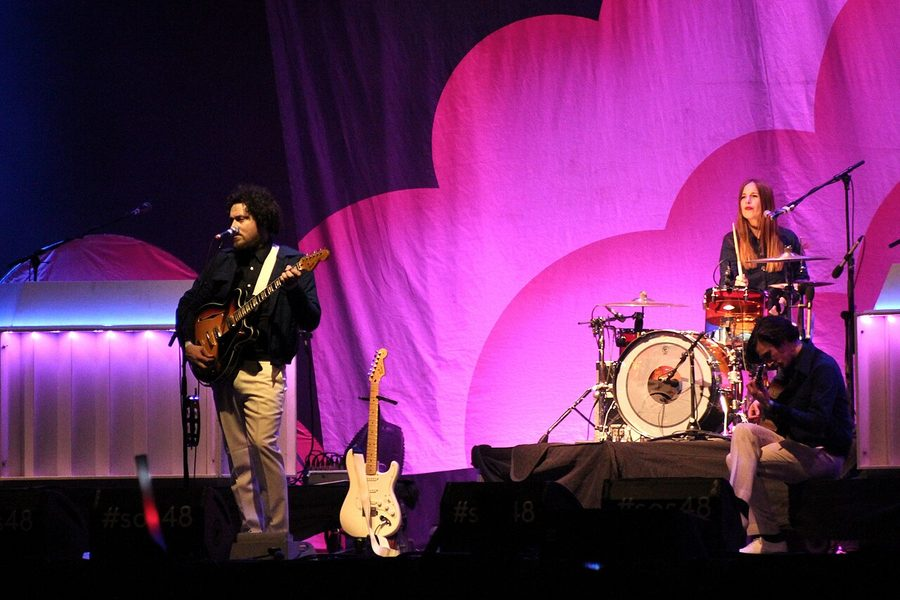

Metronomy play Parklife sideshows, presented by inthemix



Metronomy are one of the many top-form indie/dance acts that make up this year’s mega Parklife lineup, and with the festival already sold out in several cities across the country, fans will be more than pleased to have another chance check them out. They’ll be returning triumphantly after their successful tour in January that saw them debuting material from their Nights Out album.
We’ll be seeing a new-and-improved Metronomy when they make it back down next month. Following long-standing member Gabriel Stebbing’s departure to focus on his own project, the reincarnated band recruited Gbenga Adelekan on bass and Anna Prior on drums, in the process transforming the Metronomy live experience from a laptop-looping trio into a full live band.
Metronomy sideshows onsale Tuesday August 25th, presented by inthemix:
Friday, September 25 – The Zoo, Brisbane
Thursday, October 1 – Oxford Art Factory, Sydney
inthemix is a proud presenting partner of Parklife in 2009! Keep your eyes peeled to our Festival Page at inthemix.com.au/parklife, and for a Metronomy memory refresher check out the clip below…